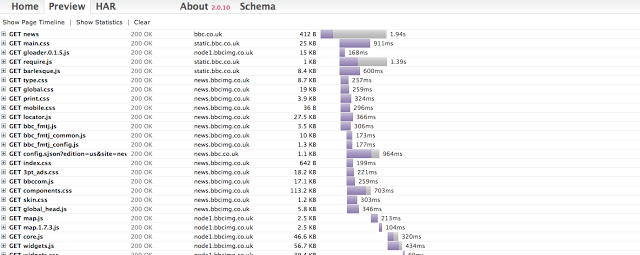

Въведение

PhantomJS е фреймуърк, построен върху WebKit (двигателят, използван от Сафари, АпСтор и много други приложения за macOS, iOS и Linux ), който предоставя възможност за навигиране в уеб страници чрез скриптове, написани на езикът Javascript. PhantomJS се нарича безглав браузър, защото изпълнението не изисква участие на конкретен браузър, а се случва в терминала, като графичния потребителски интерфейс представлява просто съобщения в командната конзола, а навигирането се случва чрез команди. С PhantomJS не е използваем за консуматорско сърфиране в интернет, но има много други свойства, използвани от разработчиците за разнообразни цели. Основните концепции на фреймуърка са улеснение в автоматизирането на уеб страници, заснемане на екрана, конвертиране на страница в pdf, наблюдение на мрежата, тестване и други. PhantomJS не позволява работа с видео или flash, защото изисква употребата на плъгини, които са трудни за интегиране в конзолно приложение.
"Безглав какво?"
На сайта на PhantomJS, технологията е обяснена по следния начин:
PhantomJS е безглав уебкит скриптируем чрез JavaScript API. Съдържа бърза и първична поддръжка за различни уеб стандарти: управление на DOM, селектиране на CSS, JSON, Canvas, SVG...
Новаците във PhantomJS биха срещнали трудности с множеството нови термини. Описанието на технологията може да демотивира разработчиците и да ги накара неопитните да повярват, че е само за екперти. Но всъщност концепциите на фреймуърка са доста лесни за схващане. PhantomJS е уеб браузър, който съществува само на скрипт. Няма графичен интерфейс, но е безглав браузър, който може да автоматизира различни процеси с JavaScript. За тези, които искат да опитат технологията, могат да си я инсталират чрез npm като изпълнят командата отдолу в своя команден интерпретатор:
npm install phantomjs -g
Следват повече подробности за основните идеи на PhantomJS:
Автоматизиране на страници
PhantomJS позволява на софтуерните разработчици да имат достъп до DOM API на браузъра. Все пак, PhantomJS е браузър без значение, че няма графичен потребителски интерфейс. Разработчиците мога да пишат код на JavaScript, който ще бъде оценен спрямо някаква конкретна страница. Въпреки че това не изглежда толкова важно, това ни позволява да автоматизираме всякакви видове взаимодействия с уеб страница, като кликване на бутони, манипулация на DOM, инжектиране на JavaScript скриптове и други, без да има нужда да отваряме какъвто и да било браузър (операция която спестява значително количество време). Това е особено полезно когато PhantomJS се ползва да се изпълняват тестове. Следният пример е взет от уебсайта, съдържащ документацията на PhantomJS и показва как може да използваме функцията evaluate() за да връщаме различни обекти от страница. В този случай evaluate() се ползва за да върне свойството textContext на елемента с ID myagent. Всичко, което се изисква в този случай е да се изпълни файл, наречен phantomjs userAgent.js в командния ред и ще получим резултатите конзолата.
var page = require('webpage').create();
console.log('The default user agent is ' + page.settings.userAgent);
page.settings.userAgent = 'SpecialAgent';
page.open('http://www.httpuseragent.org', function(status) {
if (status !== 'success') {
console.log('Unable to access network');
} else {
var ua = page.evaluate(function() {
return document.getElementById('myagent').textContent;
});
console.log(ua);
}
phantom.exit();
});
Заснемане на екран
Тъй като употребява WebKit, PhantomJS дава възможност да се възпроизвежда визуално каквото и да е съдържание на уеб страница и да се запазва като изображение. Случай на употреба на тази функционалност е автоматизирането на процеса на създаване на скрийншоти от уеб страници, които разработчиците могат да анализират с цел проверка дали софтуерът работи според очакванията. Тези изображения могат да се запазват в няколко формата, например jpeg, pdf, png, gif. Употребата на тази функционалност не е от особена сложност; следният пример нагледно показва как началната страница на GitHub може да бъде превърната в png изображение:
var page = require('webpage').create();
page.open('http://github.com/', function() {
page.render('github.png');
phantom.exit();
});
PhantomJS също позволява на разработчиците да регулират размера на тези скрийншоти, както и да определят точните области, които искат да заснемат. Долният код е модификация на горния и показва точно тези възможност:
var page = require('webpage').create();
//viewportSize being the actual size of the headless browser
page.viewportSize = { width: 1024, height: 768 };
//the clipRect is the portion of the page you are taking a screenshot of
page.clipRect = {
top: 0,
left: 0,
width: 1024,
height: 768
};
//the rest of the code is the same as the previous example
page.open('http://example.com/', function() {
page.render('github.png');
phantom.exit();
});
Допълните примери показват разнообразните свойства, които PhantomJS предлага за растеризиране и съхранение на състояние на страница:
phantomjs rasterize.js http://ariya.github.io/svg/tiger.svg tiger.png
phantomjs rasterize.js 'http://en.wikipedia.org/w/index.php?title=Jakarta&printable=yes' jakarta.pdf
Тестване
PhantomJS помага на разработчиците да автоматизират процеса на изпълнение на тестовете без да имат нужда от какъвто и да е вид потребителски графичен интерфейс. PhantomJS употребява безглавия си браузър за да управлява различни елементни тестове или приемливи тестове и използва командния интерфейс за да съобщава на разработчиците къде е открита грешка. Без съмнение основната употреба на PhantomJS е в тестването и там намира най-голямо признание; но си струва да се отбележи че не е фреймуърк за тестване. В разработването PhantomJS се използва за да стартира различни тестови фреймуърк софтуери като Karma, Mocha, QUnit и други. PhantomJS служи и като градивна единица за други проекти, залягащи върху неговите концепциии и допълващи ги за конкретни цели. Такива проекти са Lotte или Casper.js, например, които са построени върху PhantomJS, и представляват нещо като обвивка на фреймуърка с добавени допълнителни функционалности. Например Lotte добавя повече логика за твърдения в тестовете, по-разширяемо ядро, методи, подобни на тези във фреймуъркът jQuery и възможност за вериги от методи. PhantomJS се използва и в системи за непрекъсната интеграция. Непрекъснатата интеграция представлява процес на синхронизация и наблюдение върху качеството на кода докато разработчиците работят върху различни задачи. Основните проблеми, които този процес решава са възможни грешки, възникнали при сливането на код, служещ за решаване на определена задача, с кода в основното хранилище, както и изпълнението на тестове при качване на нов код. Разработчиците могат да интегрират PhantomJS към CI системи като TravisCI, която изпълнява тестове преди новият код да бъде добавен към главното хранилище. Като резултат могат да бъдат открити и оправени проблеми много по рано в процеса на софтуерна разработка, което подсигурява че счупен код няма да бъде качен сред вече работещия. Един по конкретен пример е употребата на PhantomJS при smoke тестване на уебсайтове. В основата си, smoke тестването е избор на определен набор от тестови случаи сред цялото множество, които изследват за критични проблеми в системата. Тоест smoke тестове се наричат тези, които се смятат за най-важни и без които системата би загубила своята цялост и поток на работа. Например, за уебсайт поддържащ логика за акаунти и вписване в акаунт, smoke тест би опитал да попълни данните на съществуващ потребител и да провери дали успешно е влязъл в системата. Точно това е постижимо като се използва PhantomJS.
Наблюдение на трафик
Друго основно свойство на PhantomJS е възможността да наблюдава мрежовите връзки. Както е споменато в документацията:
Защото PhantomJS позволява инспекцията на мрежовия трафик, той е подходящ за построяването на различни анализатори на мрежовия трафик и поведение
Това означава, че PhantomJS може да бъде програмиран да събира различни данни относно производителността на дадена уеб страница, както следният прост примерен код, тестващ скоростта на зареждане на страница:
var page = require('webpage').create(),
system = require('system'),
t, address;
if (system.args.length === 1) {
console.log('Usage: loadspeed.js ');
phantom.exit(1);
} else {
t = Date.now();
address = system.args[1];
page.open(address, function (status) {
if (status !== 'success') {
console.log('FAIL to load the address');
} else {
t = Date.now() - t;
console.log('Page title is ' + page.evaluate(function () {
return document.title;
}));
console.log('Loading time ' + t + 'msec');
} phantom.exit();
});
}
Извлечените разнообразни данни от различните тестове след това могат да бъдат реформатирани за по лесен анализ. PhantomJS може да прихваща заявките отправени към и от някоя определена страница, като се използват основните callback методи на фреймуърка– onResourceRequested и onResourceReceived, например по следния начин:
var page = require('webpage').create();
// hook into initial request
page.onResourceRequested = function(request) {
console.log('Request ' + JSON.stringify(request, undefined, 4));
};
// hook to response
page.onResourceReceived = function(response) {
console.log('Receive ' + JSON.stringify(response, undefined, 4));
};
page.open(url);
PhantomJS често се използва в комбинация с други системи, когато фокуса е върху наблюдение на трафика. Данните, получени от извършените прегледи, се предават на комбинираният софтуер и биват реформатирани в различни формати. Например модулът netsniff.js експортира извлечените данни в HAR формат и може да се ползва HAR преглеждач за онагледяване на данните. Следното изображение показва водопадна диаграма на заявките, добита от уебсайта на BBC:
Проекти като YSlow се използват за по детайлно наблюдение и анализиране на мрежата, като репортът може да бъде според TAP (Test Anything Protocol) протоколът. Когато е имплементиран, TAP позволява комуникацията между unit тестове и тестовата обвивка, която в случая е PhantomJS. Освен това PhantomJS и YSlow използват протоколът в системи за непрекъсната интеграция, като Jenkins, за наблюдение на нов код, добавян в системата, като по този начин се автоматизира регресивното тестване при нови функционалности.
Заключение
PhantomJS e много мощно сечиво за автоматизация и тестване на уебсайтове, но писането на чист PhantomJS скрипт не е лъжица за всяка уста. Добрият съвет е да се впрегне силата на фреймуърка като се комбинира с други тестови фреймуърци по избор на разработчика.
Неподдържани свойства
Поддръжка за плъгини (като Flash) е отпаднала преди много време. Основните причини са: Чистата липса на интерфейс на браузър прави невъзможна употребата на плъгин работещ в прозорец. Проблеми и бъгове са трудни за поправка. Поддръжка за следните свойства е неуместна поради природата и концепцията на PhantomJS: WebGL изисква система способна да ползва OpenGL. Тъй като целта на PhantomJS е да бъде 100% безглава и самодостатъчна, това не е приемливо. Употребата OpenGL емулация чрез Mesa може да превъзмогне тази лимитация, но тогава производителността ще спадне. Видео и Аудио поддръжка изискват и множество от различни кодеци. CSS 3D се нужда е от перспективно-правилна имплементация за преобразуване на текстури. Това не може да бъде постигнато без наказание в производителността. Всяко от горните свойства може да бъде поддържано в бъдеще, стига техническите предизвикателства асоциирани с проблема да бъдат решени. Дотогава не се препоръчва да се гласува доверие на някое от тях.
Нетествани свойства
XPath
PhantomCSS
PhantomCSS e Node.js сечиво с отворен достъп за изпълнение на визуално регресивно тестване. PhantomCSS позволява да бъде използван безглав браузър, да се отвори страница и да се вземе скрийншот на цялата страница или на определен елемент от страницата. Скрийншотът ще бъде запазен като основа за по-нататъшни препратки. Когато нещо бива променено по страницата, може да бъде изпълнен PhantomCSS отново. Скриптът ще вземе още един скрийншот и ще го сравни с оригиналното изображение. Ако няма никакви разлики, тогава тестът е минал. Ако обаче скрийншотите не съвпадат, тестът няма да успее и ново изображение, показващо разликите ще бъде създадено за преглед. Затова PhantomCSS е перфектен софтуер за тестване на разлики в CSS-a.
PhantomCSS е построен върху няколко ключови компонента:
-
CasperJS - сечиво за интеракция със PhantomCSS браузър. Позволява да бъде отворена страница и да бъдат изпълнение потребителски действия, като кликване на бутони или въвеждане на стойности. Още повече, CasperJS предоставя свой тестов фреймуърк и възможност за скрийншотване на страница.
-
PhantomJS 2 или SlimerJS - два различни безглави браузъра, като и двата могат да бъдат ползвани с PhantomCSS.
-
Resemble.js - библиотека за сравнение на изображния.
Инсталирането на PhantomCSS е лесно, всичкото което трябва да се направи е да бъдат добавени няколко зависимости към проекта:
npm install phantomcss casperjs phantomjs-prebuilt --save-dev